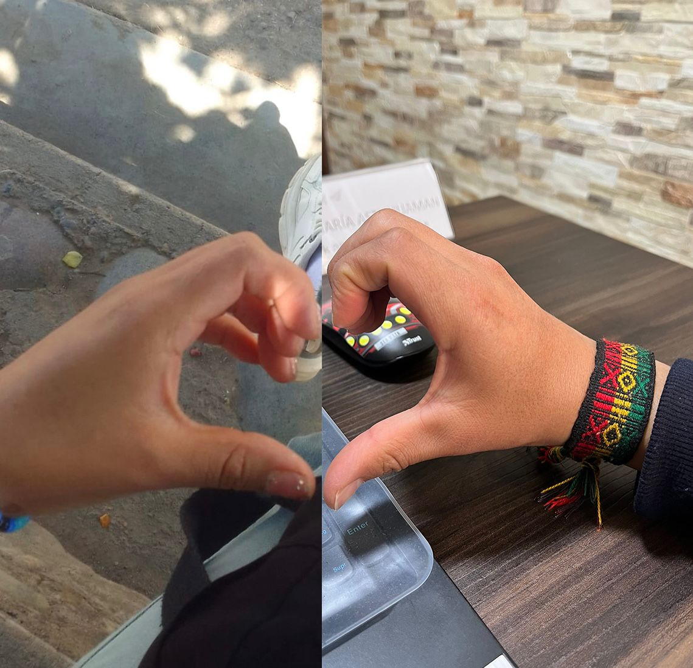
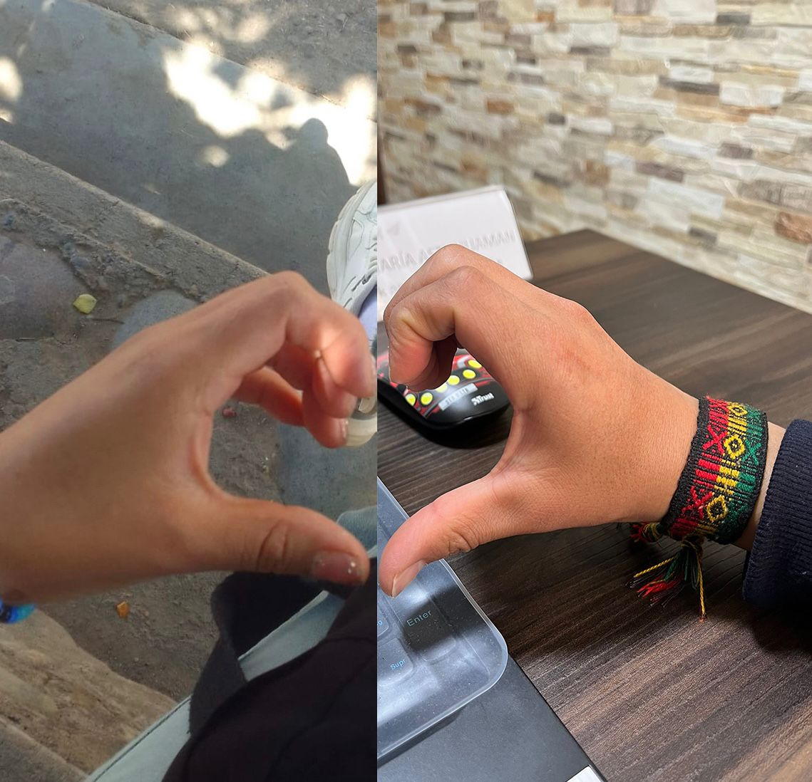

Feliz 14 de Febrero, mi amorcito 💖
Aunque los kilometros nos separen
tenemos un lazo que nos une :3
Este pequeño espacio es solo para ti,
para recordarte cuánto te quiero.
🎶 Canciones para ti
La primera vez que escuche esta canción la letra me impacto bastante, porque en lo primero que pense fue en ti :3 ❤️ Y basicamente toda la letra hace juego, llegaste en un momento crítico para mi vida y llegaste para guiar y alumbrar mi vida Realmente me gusta mucho como tu compañia y tu presencia puede hacer demasiado, me das paz, calma y tranquilidad, cuando veo tus ojos puedo ver un futuro a tu lado y lo mejor de todo la satisfacción de encontrar la felicidad que tanto buscaba te agradezco por llegar a mi vida y darle un propósito, un sentido y una guía, gracias por todo, por tus besitos, por tus abrazos por tu forma de ser Y gracias por ilusionarme :3, me llenas de felicidad amorcito :3
Hoy desperte con ganas de besarte hahaha practicamente es como despierto todos los dias, se que hemos pasado por muchas hasta ahora creo que ninguno de los 2 pensaba en algun momento en tener una relación a distancia pero creo que encontramos a la persona indicada debemos hacer todo lo posible porque suceda, aun recuerdo el dia que nos despedimos :'3 con el ultimo abrazo, y dentro de mi mente saber que teniamos que esperar mucho tiempo para poder volver a abrazarnos y saber cuanto vas a extrañar a la otra persona, hoy es 14 de febrero amor, el 14 pasado no te compre flores :C perdoname eso amorcito hoy te compre flores :3 cuando despiertes encontraras las flores y son para ti :3 Nunca en mi vida he pasado el 14 de febrero con una persona amorcito, y para ser la segunda vez que lo pasare con alguien quiero dar lo mejor de mi Te quiero muchooooo amorcito, el tercer 14 de febrero creo que aun la pasaremos separados :'3 pero despues va podremos estar juntos por siempre y te podre recompensar con muuuuuchos besitos :3 Te quiero mucho amor ❤️ ❤️ ❤️ ❤️ ❤️ ❤️ ❤️ ❤️ ❤️ no lo olvides, eres muy importante para mi Te quiero mi chinita hermosa ❤️
Rie chinita :3, no es bonito contemplar a una persona y sin decir nada encontrar la paz en sus ojos? Se que algun dia moriremos y nos falta toda una vida por disfrutar pero esta canción siempre me lleva al primer atardecer que vimos juntos un instante de tiempo que desearia fuera infinito y me hace pensar en que aun nos faltan muchos atardeceres por ver, un atardecer como este los dos sentados cerca a la playa recostados en el hombro pensando en todo aquello que pasamos y que vimos para saber con seguridad que estas con la persona indicada ❤️ hoy quiero agradecerte por estar en mi vida amorcito, por haber llegado 1 dia y por permanecer ❤️ siempre miro hacia atras y veo que casi ya va a pasar 1 año, recuerdo el dia que escribi las cartas que te llevaste, es gracioso sabes, porque recuerdo que te fuiste en abril y dije bueno el tiempo pasara y llegara mi cumpleaños, despues vendra la octubre con la procesión y despues navidad y año nuevo y despues nuevamente 1 año mas y ya nos podremos volver a ver hahahaha suena facil pero ambos sabemos que no sido muy facil ❤️ te amo por quedarte ❤️ se que cumpliremos la meta y al final estaremos juntitos y acurrucaditos :3 ❤️ y recordaremos esta historia tirados en la cama charlando y entre risas, te amo, te amare por siempre :3 sigamos en esta historia :3 ❤️ te agradezco mucho amorcito Te quiero, te quiero, te quieroooooooooooooooooooooooooooooooooooooooooooo ❤️ ❤️ ❤️ ❤️ ❤️ ❤️ ❤️ ❤️ ❤️ ❤️ ❤️ ❤️ ❤️ ❤️
 
